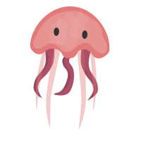
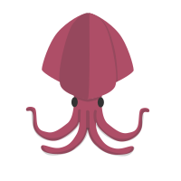
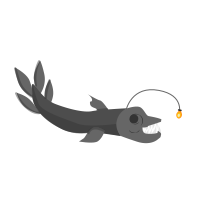
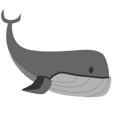
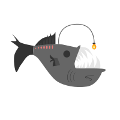

What lies at the bottom of the ocean? You've been tasked to find out.
You begin your descent down the ocean somewhere in the Pacific.
Strap in your seatbelts, it’s going to be a while.
Scroll Down to begin!
200m
Mesopelagic Layer (twilight zone)
At around 200m underwater, you reach the mesopelagic layer.
It’s almost completely dark at this point. Only 1% of light
reaches this point. Here, you find a myriad of creatures: blobfish,
bristlemouths, bioluminescent jellyfish… and other things.

600m
What's that?
You feel a pair of eyes watching you. Shining a light on the eyes,
you notice it's a giant squid! You kick your submarine into high-gear
and continue the journey.

1000m
Bathypelagic zone
You reach the Bathypelagic zone. At this point, it’s completely dark.
Using your light, you can see more creatures in the distance; many of
them don’t have eyes! You see viperfish, frillshark, and nekton.

2000m
A whale?
You see a whale? What's that doing down here. Apparently,
the deepest depth a whale has ever gone is 2000m, so while
uncommon, it’s not unordinary.

4000m
Abyssopelagic zone (abyssal zone)
At this point, it’s completely dark. While you can’t feel it, the pressure
is building up around you. Because there’s no light, you can’t see a lot
outside, but there’s still some life around you: anglerfish, tripod fish,
octopus, eels, and many bacterial organisms...

6000m
Hadal Zone
You enter a deep oceanic trench, finally reaching the Hadal Zone.
At this depth, there isn;t much life, but they are large. Everything
is giant! Amphipods, isopods,and mysids!
8370
The deepest Fish
At 8370m, you see… an eel? The cusk eel is the deepest
known fish in the ocean. You probably wont see much below here.
11,022
The center of the earth... sorta...
At 10,911 m, you surpass the previous deep-sea record, set in 1966. It’s uncharted territory from here...
You reached the bottom of the ocean! A bit anticlimactic, but it’s also something never-before done.